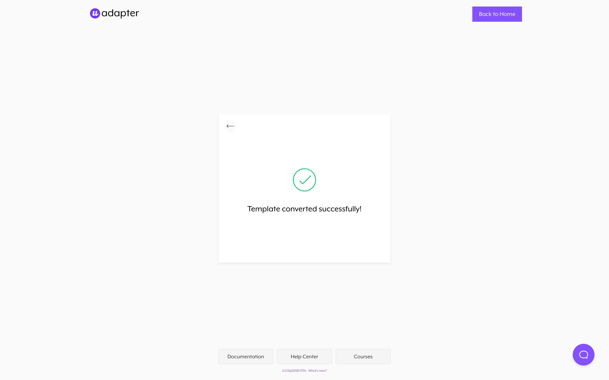

Setup
Guide
Setup
1. Create a Shopify account
Before proceeding with the template configuration, make sure you have an active Shopify account. If you don't know how to do that, please follow this guide.
2. Export Webflow Template
Once your design is finished, you can finally export your template.
3. Convert with the Udesly Adapter App
Open the Udesly Adapter Web APP you can find on udesly.com and choose the Shopify section to upload your template. Upload the .zip file of the template you've exported from Webflow, insert template data (template name, author name, template description) and start the conversion.
If you accidentally delete some attributes or added the wrong ones, the conversion process will end with an error message like the one in the screenshot.
You’ll find all the missing attributes and the wrong ones that you’re required to fix. This will help you go back to your project and correct everything to launch a new, successful, conversion. If you need help with this, you can always contact us from our Help Center.
3. Upload and activate the converted theme in Shopify
Once the conversion is ended you can download the converted template (zip file) on your pc. Now you can upload the converted theme (.zip file) from your Shopify admin panel.
Go to On Line Store-> Themes and then click on the “Upload Theme” button.
Don't forget to Activate the Theme
4. Create your products in Shopify
Once Activated the theme, you will able to add your very first product. Go to Products->Add Product:
5. Create static pages in Shopify
Each static page you've created in Webflow must be created in Shopify as well. Remember to assign the corresponding template to each of these pages from Shopify template selector. In Foodo you'll find 2 static pages: About and Contact. They must be assigned to page.about and page.contact template, respectively.
6. Create dynamic menu in Shopify
Menus in Shopify can be created by following the path Online Store > Navigation. Don't forget to create the menu in Shopify and take note of the handle of the menu, otherwise your menu will not work at all. In Foodo we used the handle megamenu. That's how our menu must be named. If you want to change it, you have to change the handle in Webflow, first.
7. Configure the Shopify sections
We added dynamic Sections in Home page. Dynamic means that they can be enabled or disabled by your customer following the path Online Store > Themes > Customize.
In particular, you'll find a dynamic section named Features allowing to control the 2 images just under the hero. So follow the path as described above, choose Features section and add the images you want to display, to the left and to the right, with corresponding texts that are editable as well.

Then, you'll find another dynamic section named Program, that's the Slider you'll find in Home page, from which section you'll be able to change each slide that compose it.
Finally, under Theme Settings, you have to connect each Product List you get in Webflow (Recent Posts, Recent Products, Related Products) to the corresponding Collection in Shopify. Also, you can manage the number of Collection items to display for each single Collection.
8. Activate customers account
You can make customer accounts required or optional, or disable them altogether. When creating an account, customers are redirected to a separate account creation page. To edit your customer account settings:
From your Shopify admin, go to Settings->Checkout In the Customer accounts section, and choose a customer account option:
- Accounts are disabled
- Accounts are optional
- Accounts are required
FAQ
Where I have to add CMS content?
Note that you have to insert the CMS content (posts, products, categories etc.) directly in WordPress. The CMS content you'll create in Webflow will not be exported.
Can I make layout changes?
Surely! All the layout changes must be done in Webflow. Once finished you only have to export the code, convert it again and re-upload the new Theme in WordPress.